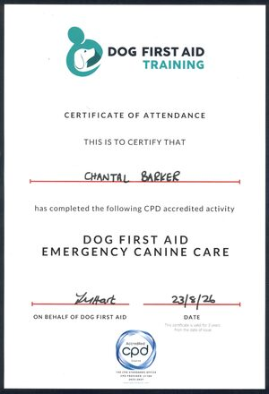
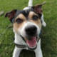

Tal’s Pals is a fully insured, dog first aid trained dog walking and pet visiting service based in Staveley, Chesterfield. Walks and visits cost £12 for 30 minutes and £18 for 60 minutes, and no group walk ever has more than three dogs in it.
Group walks take up to three dogs at a time. Keeping the group small means every dog gets the attention it needs and gets the most out of the walk. Solo dog walks are there for dogs who are happier on their own, who are nervous around other dogs, or who simply need a bit more individual care.
Every walk is built around your dog — how long they go out for, the time of day that suits them (and you), and the places they most enjoy. Walks are available in 30 and 60 minute slots, as a regular weekly booking or as a one-off.
Pet visits take care of your cat or small animal at home while you are at work or away. A visit can include feeding and fresh water, changing cat litter, letting your pet out for exercise, and simply spending time with them for company.
Tal’s Pals is based in Chesterfield and covers Staveley and the surrounding areas:
If you are just outside these areas, please get in touch and I will do my best to help. Prices are below — and if you have a requirement that isn’t listed here, just ask and I will try my best to accommodate it.
30 minutes: £12
60 minutes: £18
30 minutes: £12
60 minutes: £18

My name is Chantal Barker and I run Tal’s Pals from my home in Staveley, Chesterfield. I have been an animal lover for as long as I can remember, and I am truly grateful to have the chance to work with dogs every day. The therapeutic effect that animals have on people has always amazed me, and it is such a wonderful thing to see. My cat Elsa and Luther, my bearded dragon, are a big part of my life and have brought so much joy to me and my family. I understand how much pets mean to their owners, and how much it matters to know that your pet is in the best of hands. For all the happiness pets bring us, I think they deserve the utmost care and respect.
I have a background in care work. While working as a Personal Assistant, part of my job involved dog walking — I enjoyed it so much that I decided I wanted to walk dogs full time. Tal’s Pals began in March 2020, voluntarily walking dogs for owners who were shielding during the Covid-19 pandemic, and it has been my full time work ever since. I have loved every minute of it.
Hope your pet becomes one of Tal’s Pals soon!
I am based in Staveley and cover Chesterfield and the surrounding areas, including Inkersall, Hollingwood, Brimington, Lowgates, Mastin Moor, Woodthorpe and Poolsbrook. If you are just outside these areas, get in touch and I will do my best to help.
Yes. I am fully insured for both dog walking and pet visiting services.
Both. I offer group walks of up to three dogs so that each one gets plenty of attention, and solo walks for dogs who prefer walking alone or need more individual care.
Yes. I offer pet visits for cats and small animals, including feeding, litter changes, letting them out for exercise and giving them company while you are away or at work.
A 30 minute walk is £12 and a 60 minute walk is £18. Pet visits are priced the same: £12 for 30 minutes and £18 for 60 minutes. Get in touch to book.

Yes. I hold a CPD accredited Dog First Aid: Emergency Canine Care certificate, completed in August 2026 and valid for three years.
You can book by phone, WhatsApp, email or the contact form — all the details are in the below. Let me know your pet, your area and the days you need, and I will get back to you as soon as I can.
